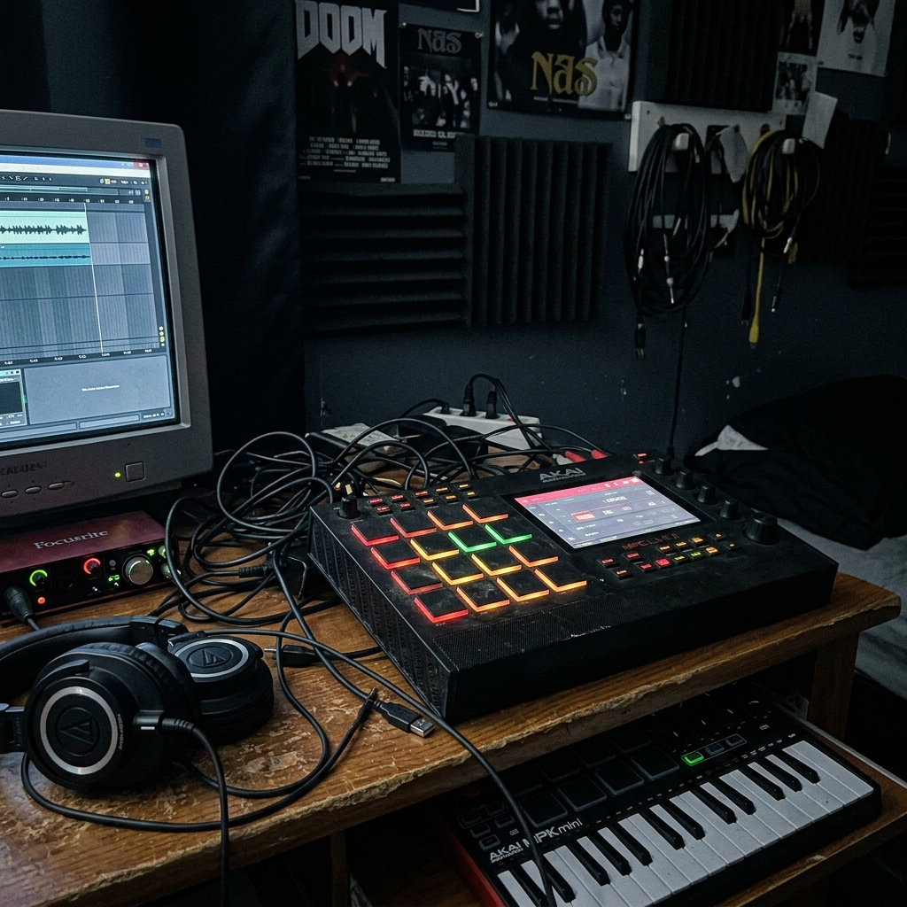
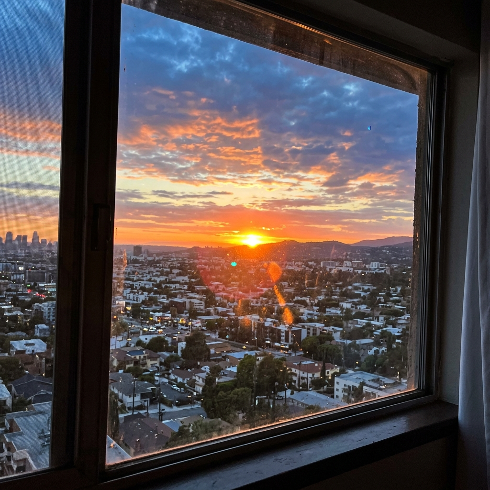
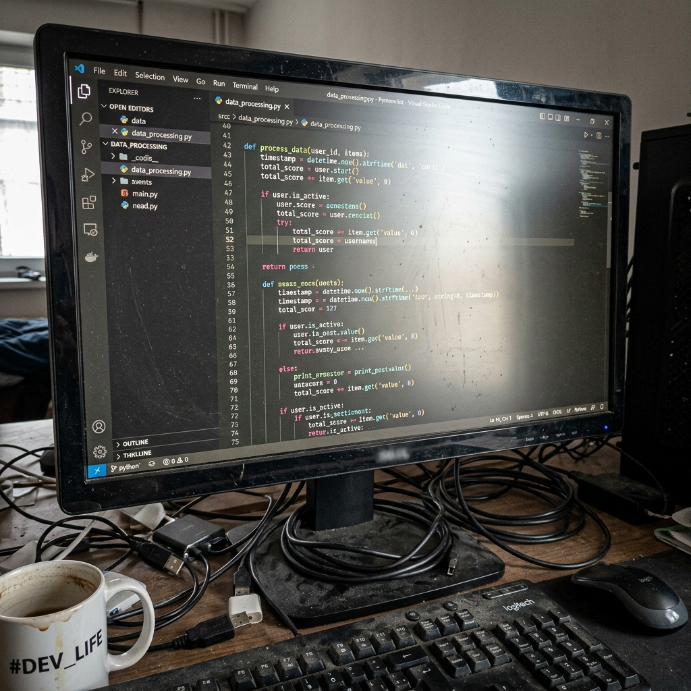

Beats com Propósito
Como a minha fé inspira as melodias que crio. Descobre o processo de adoração instrumental.
Ouvir Beat 1 →João 8:32

Beatmaker & Estudante de Engenharia Informática
Olá, a Paz do Senhor! O meu nome é Frederick Daniel. Esta é a minha Landing Page de alto impacto como projeto para a unidade curricular de Interfaces e Tecnologias Web.
Além de estudar Engenharia, sou um jovem cristão e Beatmaker. Acredito que a tecnologia e a arte andam de mãos dadas, e que os talentos que Deus nos dá devem ser aplicados com excelência e propósito.

Como a minha fé inspira as melodias que crio. Descobre o processo de adoração instrumental.
Ouvir Beat 1 →
Um instrumental calmo focado em sintetizadores suaves, inspirado no silêncio de Deus.
Ouvir Beat 2 →
As ferramentas de engenharia de som que utilizo para extrair o melhor ritmo de cada ideia.
Ver Setup →al20251413@alunos.ipcb.pt
+351 912 345 678